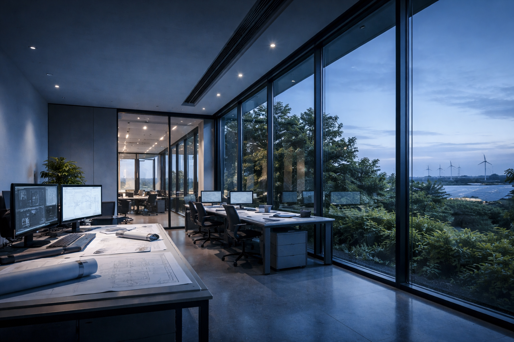
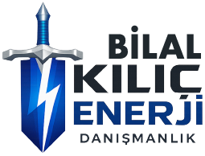

Uçtan uca iklim ve enerji danışmanlığı hizmetleri, ilgili mevzuat ve kurum dokümanlarında belirtilen yasal yükümlülükler ile teknik gereksinimler esas alınarak yürütülmektedir. Çalışmalar ilgili kamu otoriteleriyle uyumlu, şeffaf ve denetlenebilir bir çerçevede gerçekleştirilmektedir.
Bilal Kılıç Enerji Sistemleri; Jeneratör İmalatı, İnşaat, Gıda, Tekstil ve Turizm alanlarında faaliyet gösteren köklü bir yapı olarak 2009 yılında İzmir’de kurulmuştur. Çok disiplinli mühendislik yaklaşımımızla, Türkiye’den uluslararası pazarlara uzanan geniş bir coğrafyada "çözüm ortağı" kimliğiyle yer alıyoruz.

Merkezimiz İzmir/Bornova’da olup, jeneratör sistemlerinden yenilenebilir enerjiye, endüstriyel otomasyondan kritik altyapı bakımına kadar uçtan uca hizmet sunuyoruz. Amacımız sadece ürün tedarik etmek değil; işletmelerin enerji güvenliğini sağlamak ve sürdürülebilirlik hedeflerine ulaşmalarına rehberlik etmektir.
Enerji ve endüstriyel sistemlerde; yenilikçi, güvenilir, sürdürülebilir ve uluslararası standartlarda çözümler üreten, TÜRKİYE’den Dünyaya değer katan öncü bir marka olmak. Teknolojiyi doğa ile bütünleştirerek geleceğin enerji altyapılarını bugünden kurmak.
Müşterilerimizin ihtiyaçlarını doğru analiz ederek; kesintisiz enerji, yüksek verim, teknik güvenlik ve uzun vadeli çözüm ortaklığı sunmak. Etik mühendislik kurallarına bağlı kalarak, kaynakları en verimli şekilde kullanmak ve toplumsal refaha katkı sağlamak.
Almanya irtibat ofisimiz üzerinden yürüttüğümüz projelerle; NATO askeri birlikleri, Alman Silahlı Kuvvetleri ve Avrupa’daki resmi kurumların enerji altyapılarını kurduk. Türkiye pazarında ise; Çukurova Holding, Limak, Turkcell, Vodafone, Avea gibi sektör devlerinin jeneratör, baz istasyonu ve elektrik altyapı projelerinde anahtar teslim çözümler sunduk.
Jeneratör imalatı, kiralama, mobil güç sistemleri ve kritik altyapılar.
GES projelendirme, montaj ve On-grid/Off-grid hibrit sistemler.
Endüstriyel otomasyon, PLC yazılımları ve bakım-onarım.
Baz istasyonu kurulumu, enerji beslemesi ve saha teknik servis.
Makine yedek parça üretimi, tedarik ve teknik ithalat/ihracat.
Global proje finansmanı ve Avrupa merkezli iş birlikleri.